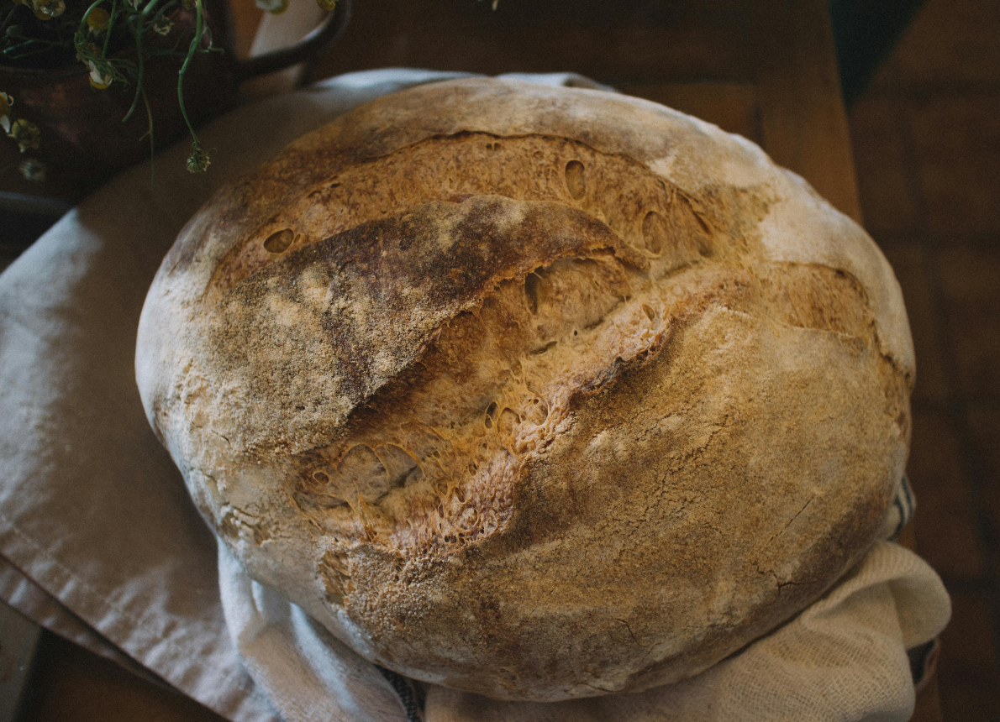
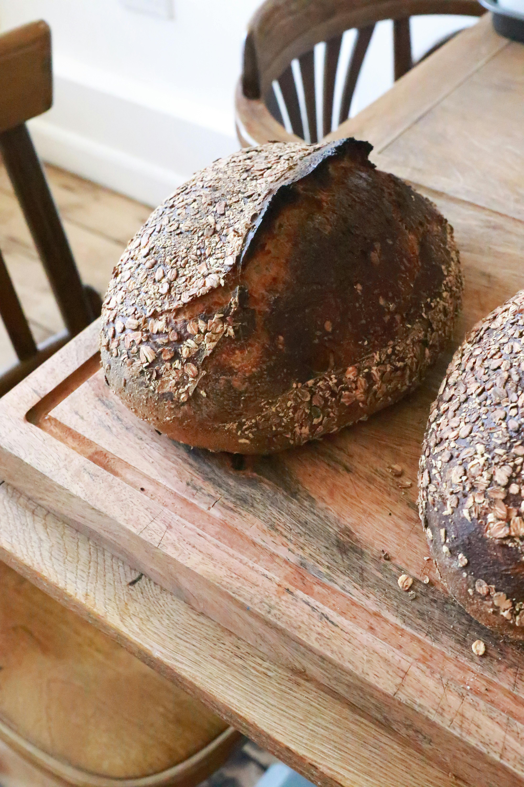
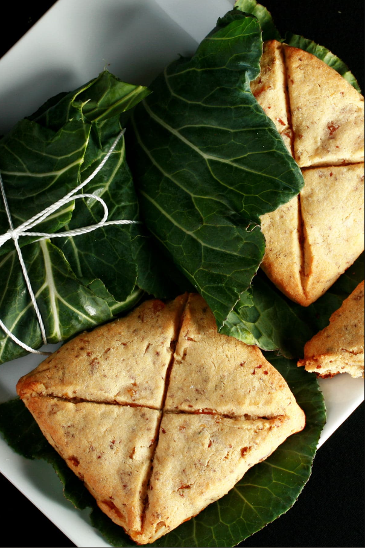
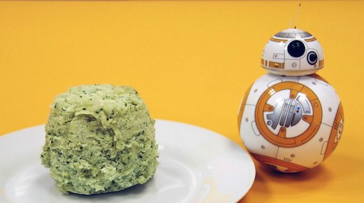

Sourdough Breads

Peasant Sourdough
It's fucking bread for fucking lowly peasants. Taste like a dirty ash tray filled with shit and dipped in piss. Enjoy you sick fucks.

Stegosourdough
It looks like a spikey bitch dinosaur so we named it after the Stegosaurus.
Made with all natural dino bone meal and lizard scales for texture.
We need help. Seriously, call a professional.

Whiteys and Wheatys


Mystical Breads

Lembas Bread
"One small bite is enough to fill the stomach of a grown man."
-Legolas-

Polystarch Portion Bread
"Known to the locals as 'portion bread,' it's really just a simple mix of polystarch flour and some water. The chemical reaction from the combination of the two creates a self-risin' miniature loaf that would satisfy even the pickiest scavenger."
―Strono Tuggs, The Official Black Spire Outpost Cookbook
―Strono Tuggs, The Official Black Spire Outpost Cookbook

Unicorn Sweet Bread
It's sweet and unique I guess. Tons of sugar. Probably gonna rot your teeth out.